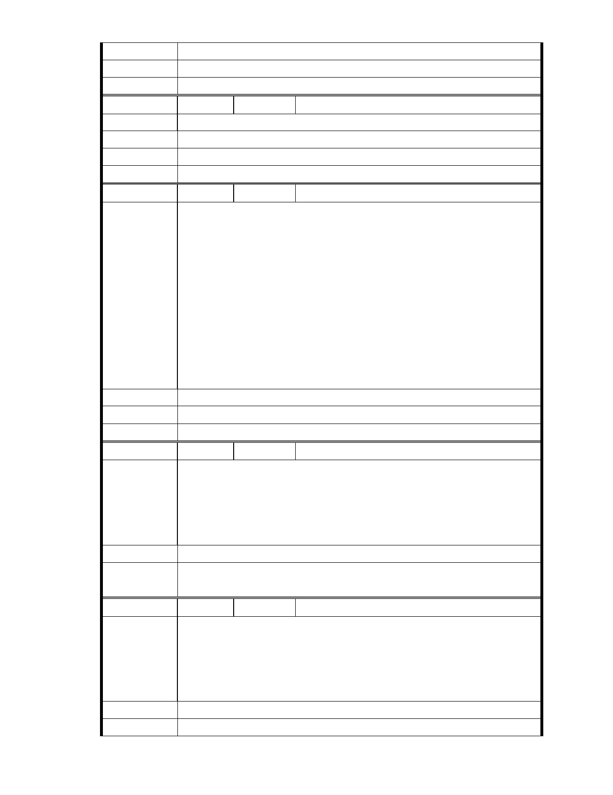

建議辦法
市 府 說 明 相關陳情意見將納入本案審查人民意見，依法定程序辦理。
委 員 會 決 議 同編號 1。
編號
陳情理由
建議辦法
市府說明
187 陳情人 黃千里
支持慈濟功德會把內湖園區建設起來，以繁榮地方。
相關陳情意見將納入本案審查人民意見，依法定程序辦理。
委 員 會 決 議 同編號 1。
編 號 188 陳情人 黃正雄
慈濟內湖園區開發案之意見投書 本人黃正雄為內湖大湖街之在地居
民，住內湖已超過 20 年現為大湖街湖中天大廈之主委（約 100 戶，已多
次擔任主委，今年又高票當選），社區離慈濟內湖園區非常近，所以非常
關心此開發案，之前聽過一些負面傳言，也有疑慮，唯今年 11 月參加慈
濟辦的內湖園區開發說明會，才發現許多傳言有誤，慈濟園區開發案其
陳 情 理 由 實兼具環保與社區活動服務功能，園區包含生態滯洪池、環保綠地、社
區活動中心、志工訓練中心、老人輕安居與圖書館等，對社區民眾之生
活與居住品質助益甚大，而慈濟是一個獲聯合國與許多國家稱讚與認同
的國際慈善組織，長期致力於行善和環保工作，相信一定可以兼顧環保
並把園區開發得很好，因此投書表達支持之意，謝謝！內湖區大湖街湖
中天大廈主委黃正雄（台北市內湖區大湖街 131 巷 2 弄 8 號 6 樓）。
建議辦法
市 府 說 明 相關陳情意見將納入本案審查人民意見，依法定程序辦理。
委 員 會 決 議 同編號 1。
編號
陳情理由
189 陳情人 施梨雪、MA201212140046
我支持慈濟內湖園區改建的理由現有的慈濟內湖園區地表面是 30 年前公
車站業者所鋪設的柏油路，並無任何滲水、保水的功能，所以慈濟計畫
改善現有環境破舊的面貌，將柏油路挖除及設置生態池滯洪湖、生態景
觀池等，對於內湖的排水與生態教育將有很大的貢獻，也不易淹水。所
以我非常贊成慈濟改建的計畫。
建議辦法
市 府 說 明 相關陳情意見將納入本案審查人民意見，依法定程序辦理。
委 員 會 決 議 同編號 1。
編號
陳情理由
190 陳情人 許麗薰
請都發局拿出魄力，不要因為少數為反對而反對的人就屈服。我是內湖
居民非常期待慈濟內湖園區能夠快蓋起來，那將是內湖居民的福也是台
北市民的福，我們不想在大湖公園散步時看到慈濟的鐵皮屋，實在是很
諷刺，那麼棒的慈濟要來蓋高興都來不及了，還在反對甚麼，請都發局
拿出魄力支持慈濟。
建議辦法
市 府 說 明 相關陳情意見將納入本案審查人民意見，依法定程序辦理。
- 247 -